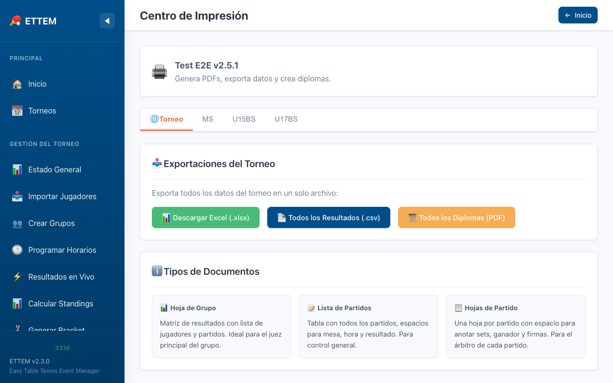

Centro de Impresión
Genera e imprime todos los documentos del torneo desde un solo lugar: hojas de partido, grillas de grupo, brackets y el scheduler de mesas.
Cómo Acceder
El Centro de Impresión está disponible en la barra lateral izquierda del panel principal, bajo la sección Operación. Haz clic en Centro de Impresión para abrir la página central de documentos imprimibles del torneo.
También puedes acceder directamente a través de la URL
/admin/print-center desde cualquier navegador en la red local.

Tipos de Documento
ETTEM ofrece cuatro tipos de documentos imprimibles, cada uno optimizado para una función específica durante el torneo:
| Documento | Descripción | Uso típico |
|---|---|---|
| Hoja de Partido | Hoja oficial para que el árbitro o los jugadores registren el marcador set a set durante el encuentro. | Se coloca sobre la mesa antes de cada partido. |
| Hoja de Grupo | Matriz completa del grupo con todos los enfrentamientos, casillas para el marcador de cada partido y tabla de posiciones al final. | Se pega en la pared o en la mesa del grupo para seguimiento en vivo. |
| Bracket (Llave) | Visualización del cuadro eliminatorio con todos los enfrentamientos, resultados y el campeón al final. | Se imprime al finalizar la fase de grupos para anunciar la llave KO. |
| Grilla del Scheduler | Tabla de asignación de partidos a mesas y horarios, con el itinerario completo de la sesión de juego. | Se distribuye a los jugadores al inicio del torneo o de cada sesión. |
Cómo Imprimir un Documento
El proceso es el mismo para todos los tipos de documento:
- Selecciona el tipo de documento en el Centro de Impresión (Hoja de Partido, Hoja de Grupo, Bracket o Scheduler).
- Elige la categoría del torneo para la que quieres generar el documento. Si el documento es por grupo (Hoja de Grupo), también selecciona el grupo específico.
- Previsualiza el documento en el navegador. ETTEM genera una página optimizada para impresión con márgenes, tipografía y formato adecuados.
-
Imprime con el atajo de teclado:
- Windows / Linux:
Ctrl + P - macOS:
Cmd + P
- Windows / Linux:
Hoja de Partido
La Hoja de Partido está diseñada para que el árbitro o los propios jugadores anoten el marcador durante el encuentro. Incluye:
- Nombre y apellido de ambos jugadores (o equipos).
- Categoría, ronda y mesa asignada.
- Casillas para el marcador punto a punto de cada set.
- Espacio para la firma de ambos jugadores al finalizar.
- El encabezado de branding del torneo (logo, organizador) si está configurado.
Se puede imprimir una hoja por partido individual o un bloque de hojas para toda una ronda, seleccionando la opción correspondiente.
Hoja de Grupo
La Hoja de Grupo muestra la matriz de resultados del grupo en formato tabular: filas y columnas representan a los jugadores, y cada celda indica el resultado del enfrentamiento entre ambos. Incluye:
- Lista de jugadores del grupo con su país y ranking inicial.
- Matriz de enfrentamientos con espacios para el marcador (sets ganados).
- Tabla de posiciones al pie con columnas: PJ, PG, PP, SG, SP, PG, PP, Pts.
Esta hoja se puede pegar en la pared junto a la mesa del grupo para que todos los participantes sigan el avance en tiempo real — el árbitro anota los resultados a mano conforme se van jugando.
Bracket
El bracket imprimible muestra el cuadro eliminatorio completo en formato visual de árbol, con todos los enfrentamientos ordenados por ronda. Los resultados ya ingresados se muestran automáticamente en el documento.
Grilla del Scheduler
La grilla del Scheduler muestra el itinerario completo de asignaciones de partidos a mesas y franjas horarias. Es ideal para distribuirla a los jugadores al inicio de cada sesión para que sepan en qué mesa y a qué hora juegan.
Para más detalles sobre cómo crear y gestionar sesiones de scheduler, consulta la sección Scheduler.